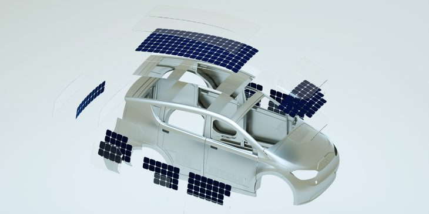
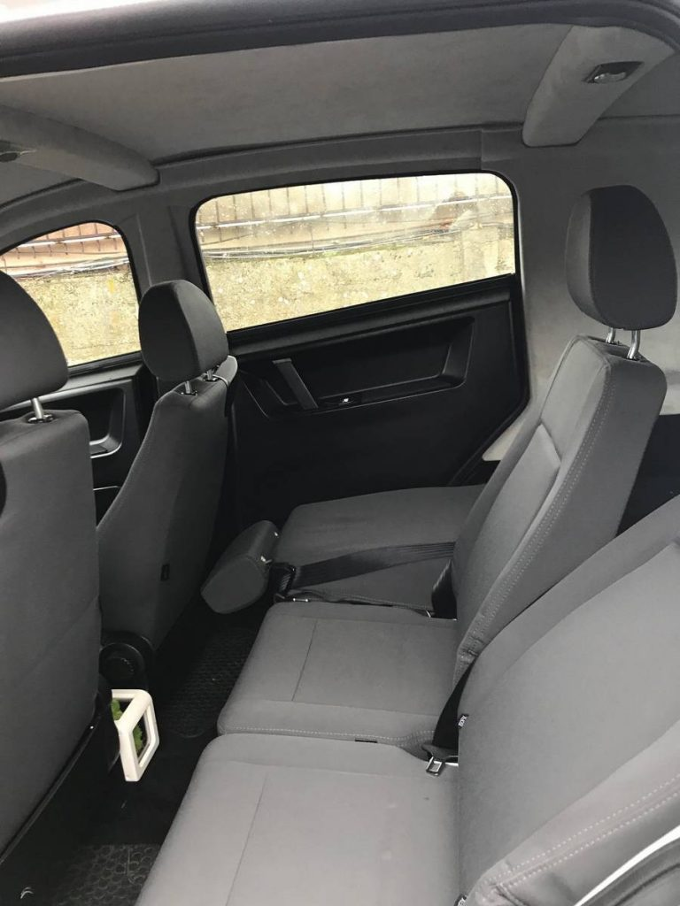

Berline compacte, la Sono Sion est une cinq portes capables d’embarquer jusqu’à 5 passagers.
Longue de 4.11 m et large de 1.79 m, elle affiche un poids de 1400 kilos et, assez rare sur ce type de véhicule, dispose d’un attelage capable de tracter une remorque de moins de 750 kilos.
En termes de design qui est vraiment exceptionnel, la voiture électrique de Sono Motors se caractérise essentiellement par ses panneaux solaires intégrés à la carrosserie (hotte, les deux côtés, toit et l'arrière) et promettant de pouvoir récupérer jusqu’à 30 km d’autonomie par jour.
Carroserie du véhicule

De plus, l'extérieur est principalement composé de polycarbonate très durable. Il est inflammable et très résistant aux chocs.
Intérieur
Intérieur moderne et confortable, il a été conçu pour être aussi clair et simple que possible afin que ses utilisateurs puissent avoir un contrôle rapide et total de la voiture.
Plage avant de la voiture
La mousse verte qui est un élément décoratif permet le recyclage de l'air de l'habitacle pour une durée de deux à trois ans. Il est bien entendu possible de la renouveler pour une trentaine d'euros le kilo.
Plage arrière de la voiture

Le grand coffre offre assez d'espace pour facilement transporter vos courses !